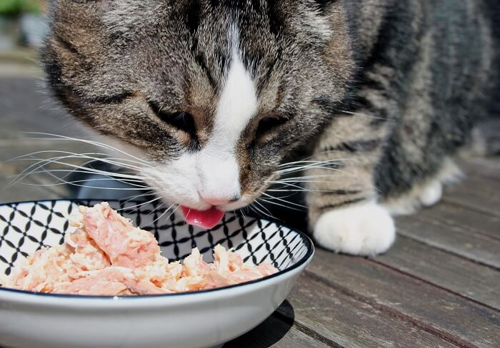

Chicken Thighs with Bone

Your cat will meow for more!
Ingredients
- 5 pounds chicken thighs with bone
- oz. raw chicken liver
- oz. raw chicken heart
- oz. bottled spring water
- 4 raw egg yolks
- 2,000mg taurine
- 4,000mg wild salmon oil
- 200mg vitamin B complex
- 200 IU vitamin E
- 1 ½ tsp lite iodized salt
- 4 tsp psyllium husk powder (optional)
Instructions
- Remove the skin from half the chicken thighs, but do not remove the fat.
- Remove the bone from 20% to 25% of the chicken thighs and rinse the meat with water.
- Combine the dry supplements in a small bowl and mix well.
- Whisk in the egg yolks and water to create a slurry.
- Weigh out and chop the chicken liver, heart, and thigh meat.
- Place a bowl under the meat grinder and feed the ingredients through.
- Add the liver, heart, and fish oil capsules at intervals (use the entire fish oil capsule).
- Transfer the ground mixture to a large bowl and mix in the slurry and psyllium husk powder.
- Portion out the mixture and refrigerate or freeze.
Notes: When portioning out the raw food, take into account how much you’ll be feeding your cat at each meal to make it easier on yourself. You can freeze the food in plastic containers, freezer bags, or even ice cube trays to create smaller portions.